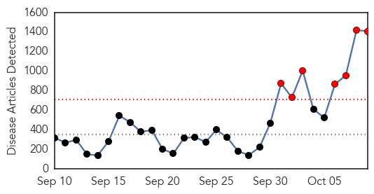
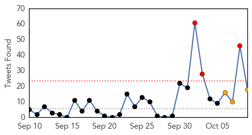
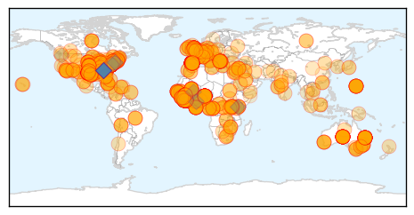

Toggle navigation
Early Warning
Daily Alerts
Ebola
Oct 09, 2014
Compare to:
-
Dengue Fever
Hemmorhagic Fever
Mold/Fungal Infection
Influenza
Meningitis
Pertussis / Whooping Cough
Middle East Respiratory Syndrome
Cholera
Hepatitis
Chikungunya
Yellow Fever
Bubonic Plague
West Nile Virus
Swine Flu
Measles
Unknown
Mumps
30 Day Trends
Web: 7
alerts
, 0
warnings
Twitter: 3
alerts
, 3
warnings
Top Articles:
Showing top 50 articles...
1.000
Texas hospital defends care for Ebola victim
1.000
Texas hospital defends care for Ebola victim
1.000
Should we worry about Ebola becoming airborne?
1.000
9 questions you were too afraid to ask about Ebola
1.000
Texas hospital defends care for Ebola victim
1.000
State, local health officials confident of Ebola response plans
1.000
Chronology - Worst Ebola outbreak on record tests global response - World
1.000
Any returning worker exposed to Ebola to be kept in Brisbane
1.000
Briton 'dies of Ebola in Macedonia'
1.000
Ebola UK: everything you need to know about the crisis
1.000
Any returning worker exposed to Ebola to be kept in Brisbane
1.000
Worst Ebola outbreak on record tests global response
1.000
CHRONOLOGY-Worst Ebola outbreak on record tests global response
1.000
Fears Ebola will spread globally
1.000
Fears Ebola will spread globally
1.000
West African Leaders Plead for More Ebola Aid
1.000
Ebola Screening to Start Saturday at JFK Airport in New York
1.000
Dallas deputy tests negative for Ebola as fears grow in U.S.
1.000
Ill Texas deputy doesn't have Ebola
1.000
What You Need to Know about Ebola
1.000
B.C. officials reassure residents about Ebola after first U.S. case
1.000
Macedonia seals hotel after Briton dies of suspected Ebola
1.000
Texas hospital defends care for Ebola victim
1.000
How did we get here?
1.000
Texas deputy tests negative for Ebola
1.000
Hawai‘i DOH monitoring Ebola as first case in U.S. is confirmed
1.000
Ebola 'likely to arrive in UK' as pressure builds on Government to introduce airport screening
1.000
Ebola outbreak: Full scale alert as aircraft passenger jokes 'I have Ebola! You are all screwed'
1.000
Aid groups rally to fight Ebola in Africa
1.000
U.S. increases Ebola aid as another doctor dies
1.000
Ebola: Should Americans be worried? No. And yes.
1.000
Blood transfusions from survivors best way to fight Ebola
1.000
Dallas deputy tests negative for Ebola as fears grow in U.S.
1.000
Macedonia seals hotel after Briton dies of suspected Ebola
1.000
Ebola Q and A: What you need to know
1.000
Ebola Outbreak 2014 Latest News: What are the Symptoms of Ebola?
1.000
Dallas deputy tests negative for Ebola as fears grow in U.S.
1.000
Macedonia seals hotel after Briton dies of suspected Ebola
1.000
Ebola fight in Liberia ramps up as U.S. sends marines
1.000
Department of Health - Bonney Lake-Sumner Courier-Herald
1.000
US urges action to keep Ebola from becoming ‘next AIDS’
1.000
Rocky View Publishing reporter watches as Ebola spreads to North America
1.000
ABC News (Australian Broadcasting Corporation)
1.000
Ebola Q and A: Here’s what you need to know
1.000
Ebola: More fears, more measures as first patient diagnosed in the U.S. dies
1.000
Ebola: First US Ebola patient, Thomas Duncan, dies
1.000
US warns Ebola could become next AIDS amid fears for Spanish nurse
1.000
Factbox - Worst Ebola outbreak on record tests global response
1.000
The Chosun Ilbo (English Edition): Daily News from Korea
1.000
West African Leaders Plead for More Ebola Aid
Top Tweets:
0.922
RT: Total Ebola cases (as of Oct 7th): Guinea: 1199 Liberia: 3824 Sierra Leone: 2437 Nigeria: 20 Senegal:1 Spain:1 US: 1 …
0.910
RT: Australia, Queensland - Cairns nurse tests negative for Ebola http://t.co/40huCbH6uP Ebola
0.907
There have been no reports of pets becoming sick with Ebola or of playing a role in transmission of Ebola to humans.
0.882
A person infected with Ebola virus is not contagious until symptoms appear. http://t.co/puCJv8T55S
0.859
RT: Treatment of Ebola virus infection with brincidofovir - at virology blog http://t.co/YE4EMpe6UD
0.848
New Ebola writing from "Do your [kola nuts] have Ebola?...They sit in the cupboard, unused." https://t.co/CvkSuhJfdD
0.826
Imposing quarantine on entire nations would backfire and fuel the Ebola epidemic.
0.826
Imposing quarantine on entire nations would backfire and fuel the Ebola epidemic.
0.809
Ebola - the disease. Comprehensive coverage from http://t.co/dRoUsODM3U
0.803
RT: ECDC: Outbreak control measures are needed at its roots in West Africa http://t.co/qWp6VSA0Xr Ebola
0.785
Czech hospital tests man with Ebola symptoms. We can't stop Ebola until we stop it at its source http://t.co/IKQW06COBs TackleEbola
0.780
Recent report. Ebola infectious disease forecasting alerts doctors hospitals http://t.co/XwbxOBppKQ
0.770
Ebola healthcare workers wear protective gear to protect themselves from bodily fluids, not because Ebola is airborne.
0.763
RT: Entry screening offers important benefits. It’s one public health tool to help slow down & reduce further spread of Ebola.
0.745
RT: Presidents of Guinea, Liberia and Sierra Leone currently discussing Ebola crisis with the World Bank
0.735
WHO figures help us track the shape of the Ebola outbreak in Liberia http://t.co/XXNIcHqc8i
0.714
RT: Health is a human right. Join our campaign to treat Ebola & bring staffstuffsystems to Liberia & Sierra Leone: http://t.co/A14GA…
0.700
- The case in Dallas is the only confirmed case of Ebola in the United States.
0.694
RT: Ebola may cause more damage than the war, says Natl Coordinator to fight the disease in SierraLeone. @UNDP…
0.687
Naija ahead of UK! RT: @EbolaAlert: 591 Nigerian Health Volunteers For Liberia, Sierra Leone, Guinea http://t.co/LzRQdFtnzL EBOLA
0.678
RT: Entry screening has 2 goals: ID travelers who may be sick w/ or exposed to Ebola & ensure travelers are directed to health …
0.660
8033 Ebola cases, 3879 deaths. Latest report released 8 October: http://t.co/4DZqAsUltB [pdf]
0.646
Solidarity in action: In Liberia, survivors help train health workers for Ebola care: http://t.co/2UXFDN1ixE v Ebolaresponse
0.623
Ebola patient's death renews questions about care http://t.co/asizEiXRQU.
0.621
Banning travel to West Africa would cause more Ebola problems than it would solve, CDC director says.
0.612
We believe doctors may have unknown exposures outside of Ebola treatment units in general medical clinics.
0.611
8033 Ebola cases, 3879 deaths. Latest report released October 8th http://t.co/aN3VFc0U9S
0.605
RT: Meet the disease detectives tracking Ebola at the CDC http://t.co/VrUw1lqa19
0.605
RT: Meet the disease detectives tracking Ebola at the CDC http://t.co/VrUw1lqa19
0.603
Viruses do mutate, but Ebola is very slow at mutation, so highly unlikely to go airborne. Best to stop epidemic quickly
0.589
Since first case of Ebola in the US was confirmed, there have been thousands of false alarms but zero new cases. http://t.co/T0HqzORv1k
0.583
RT: Let stop this epidemic of Ebola. http://t.co/pF7YPxTDhc
0.565
Ebola is killed with EPA-registered hospital disinfectants. http://t.co/CYQNXloOrY
0.558
Help us shakeebolaoff for! https://t.co/Pb5Jd7sALH wecanfightthis endebolanow emergencyusa ebola sierraleone
0.558
even if consumption patterns haven't changed, the of ebola-carrying bats might have.
0.541
US Ebola patient Thomas Duncan dies in hospital http://t.co/IJObrtrv5I
0.533
The terrifying numbers behind the Ebola epidemic http://t.co/Wd6SzUZkUu via
0.524
As deadly virus rages in Africa, Nigeria is officially Ebola-free http://t.co/hOitomNxiW. We can TackleEbola http://t.co/K1gBtNAR6T
0.505
.@shiwaseneko Ebola-related questions can be sent to and
Web/News Articles

Tweets

Article Locations

Article Confidences